第一章洗衣店
台北的深夜有很多種聲音，柯瑾最熟的是洗衣機的。
她在萬華一間二十四小時自助洗衣店做夜班，晚上十一點到早上七點。店很小，十二台洗衣機，八台烘衣機，一台販賣機，三張塑膠椅。老闆是一個六十幾歲的男人，一年來不到十次，每次來都說「有妳在我很放心」，然後把鑰匙留下來就走了。
她的工作是坐著。有人來，她點頭；有人的零錢卡住了，她去拍販賣機；有人把衣服忘在烘衣機裡，她拿出來摺好，放在架子上。大部分時間她坐在最裡面的那張椅子上，聽洗衣機轉。
深夜來洗衣服的人，大概分三種。第一種是下班太晚的人，把衣服丟進去，滑手機，四十分鐘後拿走，不看任何人。第二種是沒有洗衣機的人，租套房的學生，剛搬來台北的人，他們會坐著等，有時候會跟她講幾句話。第三種是沒有家的人。
那個星期二凌晨三點，來的是第三種。
一個老人，六十幾歲，推著一台超市的推車，推車裡是他所有的東西。他把一件外套丟進洗衣機，投了五十塊，然後在塑膠椅上坐下來，坐下來的三十秒內就睡著了。頭往後仰，嘴巴張著，呼吸很重。
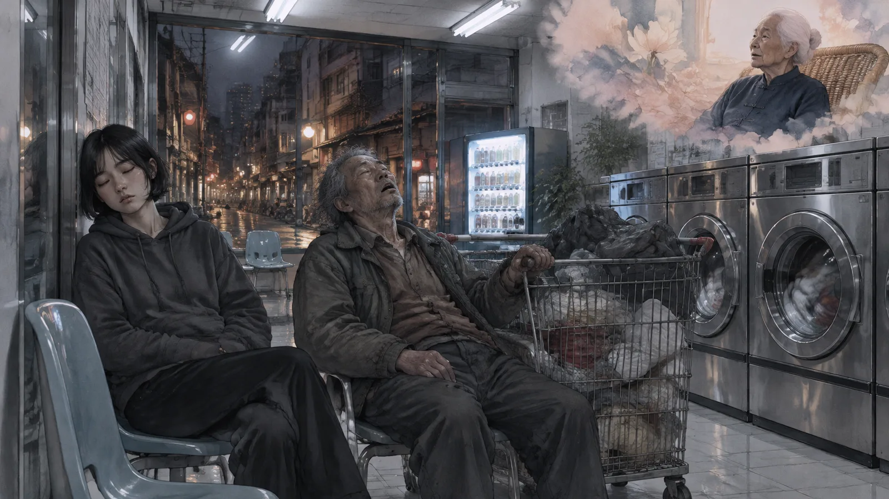
柯瑾看著他。
她看到他開始做夢——不是看到，是感覺到。老人的眉頭皺起來，手指抓緊了推車的把手，喉嚨裡發出一種很小的、像動物一樣的聲音。他在夢裡跑。她不知道他在跑什麼，可是她知道那是一個壞的夢。她能聞到。壞的夢有一種味道，像燒焦的頭髮。
她站起來，走過去，在他旁邊的椅子上坐下來。
她把頭靠在牆上，閉上眼睛。
然後她開始吃。
✦
「吃」不是一個準確的字。可是柯瑾的阿嬤是這樣說的，阿嬤的阿嬤也是這樣說的，所以她也這樣說。
實際上發生的事情是這樣的：她閉上眼睛，把注意力放在旁邊那個人的呼吸上，讓自己的呼吸慢慢跟他一樣。然後她會「滑」進去——像從一個房間的門縫裡滑進另一個房間。她會看到他在看的東西。然後她伸出手——不是真的手——把那個東西拿過來。
老人的夢是一條路。晚上，下雨，他在跑，後面有車燈。車燈越來越近。他跑不動了，腳像陷在泥裡。他回頭——
柯瑾把它拿走了。
她睜開眼睛。老人的眉頭鬆開了，手指從推車的把手上滑下來，呼吸變得又慢又長。他的嘴角甚至有一點點往上。他在做另一個夢了，或者沒有做夢，柯瑾不知道。她只知道那條路、那場雨、那道車燈，現在在她這裡。
她坐回自己的椅子。洗衣機轉著。她的胸口有一種很淡的重量，像吃了一顆石頭。
這顆石頭要花大概三天消化。三天裡她會在白天忽然看到那條路，會在等紅綠燈的時候聽到車燈後面的引擎聲，會在洗澡的時候覺得腳陷在泥裡。然後它會慢慢變淡，變成一個她「知道」但不再「感覺」的東西，然後消失。
阿嬤說，這就是貘的工作。吃了別人的噩夢，自己走完它。
老人在凌晨四點醒來，把外套從烘衣機裡拿出來，穿上，推著推車走了。走到門口的時候他回頭看了柯瑾一眼，像是想說什麼，可是沒有說。
柯瑾點了一下頭。
他走了。
第二章貘
柯瑾的阿嬤叫柯素貞，今年八十六歲，住在三重一間老公寓的四樓，一個人。
她是柯瑾知道的最後一個「會吃的人」。阿嬤說她們家從很久以前就會了，久到沒有人記得從哪一代開始。阿嬤的阿嬤在日本時代幫人吃夢，一次收一斗米。阿嬤年輕的時候在艋舺，不收錢，只幫認識的人。她說這不是一門生意，是一種「份」。
「妳看到一個人被夢壓著，妳可以把它拿走，妳就要拿。」阿嬤說，「這是妳的份。」
柯瑾十三歲那年第一次吃夢。是她同學的，那個女孩每天在教室裡睡午覺都會哭，柯瑾坐在她旁邊，不知道為什麼，就把頭靠在桌上，閉上眼睛，然後就進去了。女孩的夢是一個很大的房子，房子裡沒有燈，有人在叫她的名字，她找不到門。柯瑾把它拿走了。女孩醒來的時候說：「奇怪，今天沒有做夢。」
柯瑾那天回家跟母親說了。母親的臉白了。母親說：「妳阿嬤有跟妳說過規矩嗎？」
她那時候不知道有規矩。
規矩有三條。阿嬤在她十三歲那年的週末，把她叫到三重，坐在客廳的藤椅上，一條一條講給她聽。
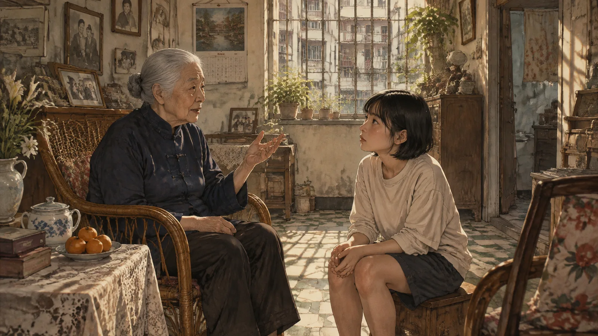
第一條：不吃自己人的夢。家人的、愛人的、太近的人的。「因為妳拿走了，那個人會變得對妳沒有秘密。人不能對另一個人沒有秘密，那會把人壓死。」
第二條：一個人的夢，最多吃三次。「三次以後，那個夢會認得妳。它就不走了。它會住在妳這裡。」
第三條：吃了，就要走完。「不能半路丟掉。妳丟了，它會找別人。」
阿嬤講完，看著她。
「妳媽媽沒有跟妳講這些，是因為她不想妳做。」阿嬤說，「她自己也不想做。可是這不是想不想的事。」
柯瑾的母親叫柯月，八年前失蹤了。
不是死了，是失蹤。她四十九歲，某一天早上出門，說去買菜，然後沒有回來。警察查了半年，什麼都沒有。沒有屍體，沒有紀錄，沒有人看到她上了哪一台車、進了哪一扇門。她像一個夢一樣消失了。
柯瑾那時候二十二歲，剛從大學畢業。她找了兩年，然後不找了。她搬到萬華，找了這份夜班的工作，因為深夜的洗衣店是一個很好的地方——很多人來，很多人睡著，很多人的夢可以吃。
她沒有跟阿嬤說這個理由。可是阿嬤大概知道。
第三章第一位客人
林老師是第一個知道柯瑾「會吃」的陌生人。
她是一個國小老師，四十歲左右，住在洗衣店附近，每個星期四晚上來洗衣服。她總是一個人，總是坐在靠窗的椅子上，總是在等待的時候打瞌睡，總是在打瞌睡的時候做噩夢。
柯瑾看了她三個星期。
第四個星期四，林老師在椅子上睡著了，眉頭皺起來，手抓著自己的手臂。柯瑾走過去，在她旁邊坐下，閉上眼睛。
水。
到處都是水。黃色的，混著泥，很急。林老師在水裡——不對，是一個小女孩在水裡，八歲，抓著一根柱子。水一直漲，漲到她的胸口，脖子，下巴。她聽到有人在喊她的名字，是她媽媽，可是聲音在水的另一邊，越來越遠。然後柱子斷了。
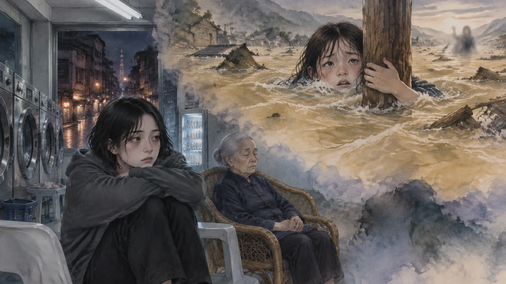
柯瑾伸手。
她把它拿走的時候，感覺到那個夢很重。比老人的重很多。它不是一個「夢」，它是一件真的發生過的事，被夢了幾百次，每一次都變得更重。
她睜開眼睛。林老師的手鬆開了。
然後林老師醒了。她睜開眼睛，看著柯瑾，看了很久。
「妳做了什麼？」她說。
柯瑾愣住了。從來沒有人醒來以後問過這個。
「我——」
「我每個星期四都會做那個夢。」林老師說，聲音很平靜，「十五年了。剛剛我又在做。然後它不見了。妳坐過來，然後它不見了。」
柯瑾不知道怎麼回答。
「妳做了什麼？」林老師又問了一次。不是質問，是真的想知道。
柯瑾想了很久。然後她說了實話。她說她會吃夢。她說這是她們家的東西。她說她不知道為什麼會，只知道會。她說林老師的夢現在在她這裡，她會花幾天走完它，然後它就沒有了。
林老師聽完，沒有笑，沒有說她瘋了。她只是坐著，看著窗外，很久。
「那是八八風災。」她終於說，「二〇〇九年。我們家在高雄山上，我八歲。水來的時候我媽把我推到一根柱子上，然後她被沖走了。我抓著那根柱子六個小時。」
柯瑾沒有說話。
「十五年了。我每個星期四做這個夢。星期四，因為那天是星期四。」林老師看著她，「妳說妳會走完它？」
「會。」
「怎麼走？」
「我不知道。」柯瑾說，「每一個都不一樣。可是它會走完。」
林老師站起來，把洗好的衣服拿出來，摺好，放進袋子裡。走到門口的時候，她回頭。
「謝謝。」她說，「我下星期四再來。看看。」
第四章消化
那個星期，柯瑾在水裡。
不是真的在水裡。是白天走在路上的時候，忽然覺得腳下是濕的，低頭看，是乾的柏油路。是在便利商店排隊的時候，聽到後面有水聲，回頭看，什麼都沒有。是洗澡的時候，水從蓮蓬頭流下來，她忽然覺得那是黃的，混著泥，她站在浴室裡，抓著牆，抓了十分鐘。
夢會這樣走。它不是一次走完的，是一點一點，滲進白天裡，然後一點一點，滲出去。
星期三晚上，她在洗衣店裡睡著了。
她很少在上班的時候睡著。可是那天很安靜，沒有客人，洗衣機都停了，她坐在椅子上，頭靠著牆，然後她就在水裡了。
這次是清楚的。八歲的女孩，柱子，水到下巴。媽媽的聲音在水的另一邊。柱子在搖。
柯瑾知道接下來會發生什麼。柱子會斷。這是夢的結尾，這是十五年來每個星期四的結尾。
可是她做了一件事。她在夢裡——不是林老師的夢，是現在已經變成她的夢——伸出手，抓住了那根柱子。不是女孩的手，是她自己的。她抓住柱子，用力，把它按住。
柱子沒有斷。
水繼續漲。漲到嘴巴，鼻子。女孩閉上眼睛。然後水停了。不是退，是停，像有人按了暫停。水面平平的，黃色的，在女孩的鼻子下面一公分。
女孩睜開眼睛。她看到水的另一邊，很遠的地方，有一個人在揮手。看不清楚是誰。可是她在揮手。
然後夢結束了。
柯瑾醒過來。凌晨四點。她的臉是濕的。胸口的石頭不見了。
✦
星期四晚上，林老師來了。
她把衣服丟進洗衣機，投了錢，在靠窗的椅子上坐下來。她沒有睡。她看著柯瑾。
「這個星期，」她說，「我沒有做那個夢。」
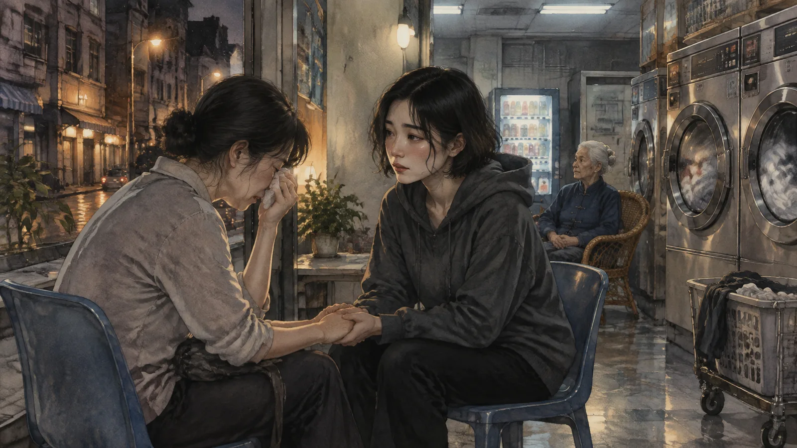
「嗯。」
「一次都沒有。」林老師說，「我星期一晚上做了一個夢，夢到我在學校改作業，有一個學生把作業本弄濕了。就這樣。我醒來的時候在笑。」
柯瑾點點頭。
「妳走完了？」
「走完了。」
林老師看著她，看了很久。然後她問了一個柯瑾沒有想到的問題。
「妳走的時候，」她說，「有看到我媽媽嗎？」
柯瑾想起水的另一邊，那個揮手的人。
「有一個人在揮手。」她說，「很遠。看不清楚。」
林老師的眼淚流下來。她沒有擦，就讓它流。洗衣機轉著。
「她在揮手。」林老師說，「十五年了。她每次都在喊，我從來沒有看到她。妳說她在揮手。」
「對。」
林老師哭了很久。然後她站起來，把還沒洗完的衣服留在洗衣機裡，走到柯瑾面前，握住她的手。
「我可以介紹別人來嗎？」她說，「有一個人，他也有一個夢。二十幾年了。」
第五章法官
那個人姓陳，七十一歲，退休法官。
他是林老師的姑丈。林老師說他從二〇〇〇年開始做同一個夢，二十幾年，每個月大概三次。他從來不跟人講夢的內容。他退休以後一個人住在大安區的一間老公寓裡，很少出門，很少講話，每個月三次，半夜會叫。
他第一次來洗衣店的時候，穿一件熨得很平的襯衫，拿著一袋根本不需要洗的衣服。他在最裡面的椅子上坐下來，離柯瑾一個位子。他沒有看她。
「林老師跟我說了。」他說，「我不信。」
「那你為什麼來？」
「因為我不信的東西太多了。」陳法官說，「我不信的東西，後來有很多都是真的。」
他把衣服丟進洗衣機，坐下來，閉上眼睛。他沒有睡著——柯瑾看得出來，他在假裝。他坐了二十分鐘，然後他真的睡著了，因為他太累了，因為他二十幾年沒有好好睡過。
柯瑾坐過去。
一間房間。白色的，很亮，日光燈。一個男人坐在對面，戴著手銬，二十幾歲，很瘦，眼睛很大。他在看陳法官。他不說話。他只是看。然後陳法官——夢裡的陳法官，年輕二十歲，穿著法袍——開口說了一句話。柯瑾聽不清楚那句話是什麼，只聽到房間裡的迴音。然後那個男人站起來，被兩個人架著走出去。走到門口的時候他回頭，看著陳法官，說：「你會記得我的。」
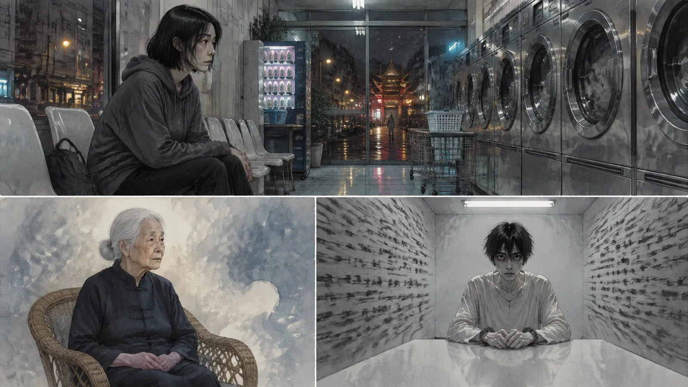
門關上。
然後房間開始縮小。牆往內推，天花板往下壓。陳法官坐在中間，不能動。牆越來越近。他看到牆上有字，密密麻麻的，是判決書。他自己寫的。他讀著那些字，一直讀，牆一直壓。
柯瑾伸手。
這個夢很硬。像一塊鐵。她拉了很久才拉動。
她睜開眼睛。陳法官還在睡，可是眉頭鬆開了。他的嘴微微張著，像一個小孩。
他醒來的時候，看著她，很久。
「妳看到了。」他說。不是問句。
「看到了。」
「妳知道那是誰？」
「不知道。」
陳法官把衣服從洗衣機拿出來。衣服是乾的，他根本沒有按開始。他把衣服放回袋子裡，站在那裡，看著地上。
「一九九七年。」他說，「一個殺人案。證據很清楚。我判了。二〇〇〇年執行。」他停了一下，「二〇〇六年，真正的兇手自首了。」
柯瑾沒有說話。
「我退休了。我道歉了。我去他家裡跪了。他媽媽沒有開門。」陳法官說，「我做了所有可以做的事。可是我每個月還是會回到那間房間。」
他提起袋子，走到門口。
「我下個月再來。」他說。
第六章診所
游醫師是在陳法官第二次來的那個星期出現的。
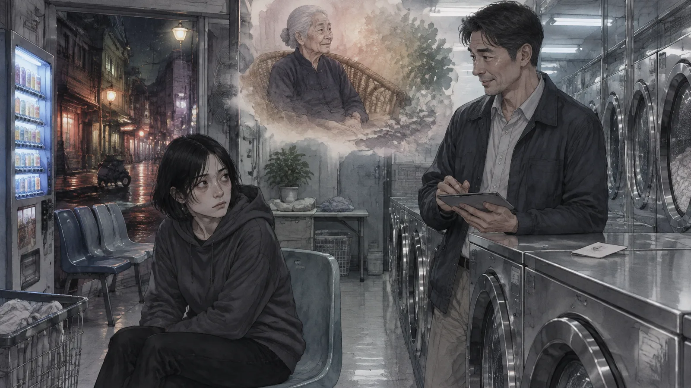
他四十五歲左右，穿著很乾淨的休閒外套，拿著一台平板，走進洗衣店的時候先看了一圈洗衣機，然後看柯瑾，然後笑了。那個笑很專業，像一個習慣了讓人放鬆的人。
「柯小姐？」
「你是誰？」
「我姓游。我在一間睡眠中心工作。」他把名片放在她旁邊的洗衣機上，「我想跟妳談談。」
柯瑾看著名片，沒有拿。
「我們中心有一個研究。」游醫師說，「我們追蹤長期噩夢患者的腦波。有一批病人，他們的噩夢在某一個時間點忽然消失了，沒有任何治療，沒有藥，就是消失了。我們追蹤了他們的行為，發現他們有一個共同點。」
他頓了一下。
「他們都來過這間洗衣店。」
柯瑾沒有說話。
「林老師是我們的病人。她十五年，每週一次的創傷型夢魘，我們試了所有的方法。三個星期前，她的腦波紀錄顯示，她的快速動眼期完全正常了。她跟我說，是一個洗衣店的女孩。」游醫師說，「我不是來調查妳的。我是來——我想知道那是什麼。」
「為什麼？」
「因為我做了二十年的睡眠醫學，我從來沒有看過一個夢可以被『拿走』。」游醫師說，「如果那是真的，那可以幫很多人。」
柯瑾看著他。她想起阿嬤說的：這不是一門生意。
「我不知道你在說什麼。」她說。
游醫師點點頭，像是早就料到。他沒有再說什麼，把名片留在洗衣機上，走了。
柯瑾看著那張名片，看了很久。然後她把它拿起來，放進口袋。
不是因為她想打給他。是因為名片的背面，用原子筆寫了一行字：
「如果妳想知道妳母親的事，打給我。」
第七章少女
小恩是自己來的。
十六歲，高中生，穿著制服，凌晨一點走進洗衣店，沒有帶衣服。她站在門口，看著柯瑾，說：「妳是那個會吃夢的人嗎？」
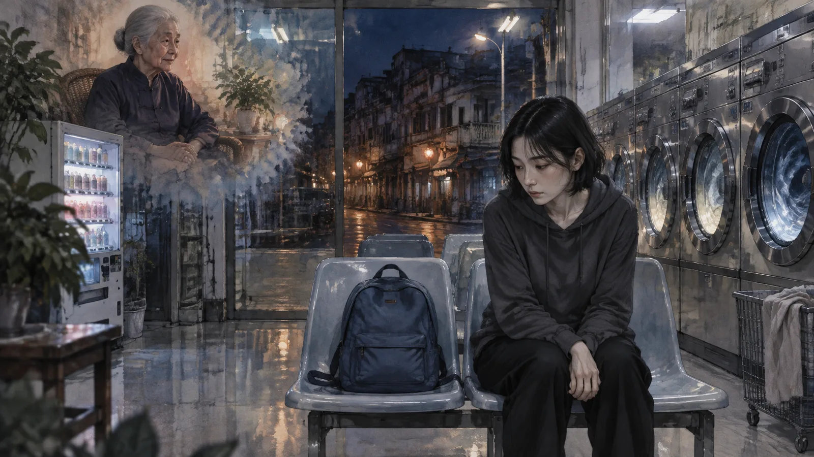
柯瑾不知道她從哪裡聽來的。可能是林老師，可能是林老師的學生，可能是這種事情在某個地方傳開了。她沒有否認。
「妳有什麼夢？」
小恩坐下來。她的手在抖。
「我夢到我四十歲。」她說，「一個人，住在一間很小的房子裡。沒有人打電話給我。我每天去上班，回家，吃東西，睡覺。我不難過，可是我也不快樂。我就是在那裡。然後我醒來，我十六歲，我在我的房間裡，我覺得——」她停下來，「我覺得那個才是真的。」
柯瑾看著她。
「妳幾歲開始做這個夢？」
「十四歲。兩年了。差不多每個星期。」
「妳家裡——」
「很好。我爸媽很好。我成績很好。我朋友很多。」小恩說得很快，「什麼都很好。可是我做這個夢。我不知道為什麼。」
柯瑾沉默了很久。
她知道這個夢是什麼。它不是一個噩夢。它是一個害怕。害怕未來，害怕孤獨，害怕「什麼都很好」的後面是什麼都沒有。這種東西，不是可以吃的。它不是從過去來的，是從前面來的。妳吃掉它，它會再長出來，因為它的根不在夢裡，在人裡。
阿嬤沒有教過這條規矩。可是柯瑾知道。
「我不能吃這個。」她說。
小恩的臉垮了。
「為什麼？」
「因為它不是夢。」柯瑾說，「它是妳在想的事情。妳把它想成一個夢，因為夢比較好處理。可是它不是。它是妳現在就在想的：我會不會變成那樣。」
「那我要怎麼辦？」
柯瑾不知道。她不是心理醫生，不是老師，她只是一個在洗衣店上夜班的人。
「妳要自己走。」她說，「不是我走，是妳。妳要走到四十歲，然後看看那間房子是不是真的。」
小恩哭了。她哭了很久，柯瑾坐在旁邊，沒有碰她。洗衣機轉著。
然後小恩擦了眼淚，站起來。
「妳很爛。」她說。
「我知道。」
「可是妳沒有騙我。」小恩說。她走到門口，回頭，「那個四十歲的我，妳說她不難過也不快樂。可是我在夢裡有一次看到她在笑。很小聲。我不知道她在笑什麼。」
「那妳就走到那裡，看看。」柯瑾說。
小恩走了。
那天晚上柯瑾沒有吃任何夢。她坐在椅子上，想那個四十歲的房間。她今年三十歲。她一個人住。沒有人打電話給她。她每天去上班，回家，吃東西，睡覺。
她想，小恩夢到的，也可能是我。
第八章母親的信
阿嬤是在十月走的。
八十六歲，在睡夢中。柯瑾接到電話的時候在洗衣店，凌晨五點，鄰居打的。她搭第一班捷運去三重，走上四樓，阿嬤躺在床上，臉很平靜，像在做一個很好的夢。
柯瑾坐在床邊，握著她的手。手是涼的。她沒有哭。她知道阿嬤走的時候沒有噩夢——她感覺得到，房間裡沒有那種味道。
葬禮很小。柯瑾一個人辦的。父親很早就不在了，母親失蹤，阿嬤沒有其他的孩子。來的是幾個鄰居，幾個阿嬤以前幫過的人——都很老了，八十幾歲，有一個坐輪椅來的，握著柯瑾的手說：「妳阿嬤幫我吃過三個夢。三個。我這輩子都記得。」
葬禮結束以後，柯瑾整理阿嬤的房子。
衣櫃最下面有一個鐵盒。她打開。裡面是一疊信，一本很舊的筆記本，和一個枕頭。
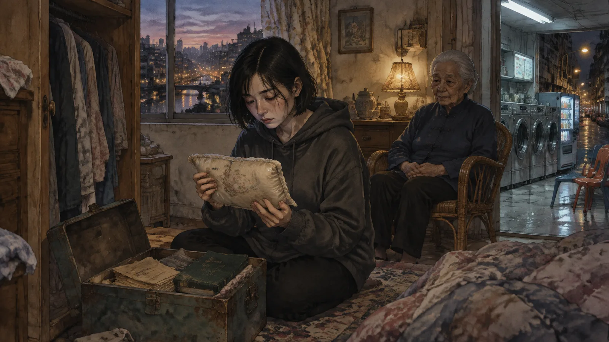
枕頭很小，是那種嬰兒用的，棉布的，已經黃了。上面繡著一個字：月。
信是母親的。八年前，失蹤前一個星期寫的，寫給阿嬤。柯瑾坐在阿嬤的床上，一封一封讀。
「媽：我不能再吃了。我吃太多了。每一個都還在我這裡，走不完，一個疊一個。我晚上睡不著，因為只要睡著，我就在別人的夢裡。我白天走在路上，會看到二十幾個人的東西。我分不出來哪一個是我的。」
「媽：我很怕。我怕有一天我會吃到小瑾的。她睡在隔壁，我聽得到她做夢。我沒有進去。可是我越來越想進去。妳說不能吃自己人的，我知道。可是我快撐不住了。」
「媽：我要走了。不是死，是走。我要去一個沒有人的地方，把我吃的那些走完。我不知道要多久。可能很久。妳跟小瑾說，她可以不做。這不是份。這是我們家的病。」
最後一封只有一行。
「媽：如果我回不來，把枕頭給她。」
柯瑾把信放下。她拿起那個枕頭，很輕，很軟。她把它翻過來。背面也繡著字，比正面的小，是母親的針線，歪歪的：
「這是我最後一個。妳吃了，我就走完了。」
第九章筆記本
鐵盒裡的那本筆記本，柯瑾是隔了一個星期才敢翻的。
封面是深綠色的布，已經磨得發白，角落用膠帶補過三次。第一頁的日期是一九五八年，阿嬤十九歲。字很小，很整齊，是那個年代的人才會寫的字。
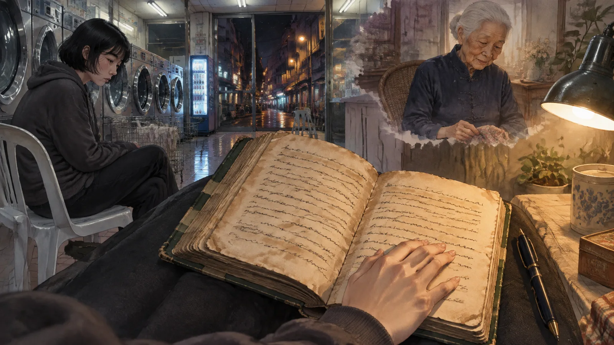
「三月二日。隔壁陳家的媳婦。夢：井。她掉進去，喊，沒有人來。吃了。走了四天。」
「三月二十日。市場賣魚的阿雄。夢：他爸打他。吃了。走了六天。」
「四月十一日。同一個阿雄。第二次。夢一樣。吃了。走了六天。」
一行一行，一頁一頁。六十幾年。柯瑾算了一下，一共四百二十七個。每一個都有日期，有人，有夢的樣子，有「吃了」，有「走了幾天」。有幾個寫著「沒吃。自己會走」。有三個寫著「第三次。不吃了」。
她翻到一九八三年。那一年有一行不一樣的：
「十月五日。阿月。第一次吃夢。是她同學的。我沒有教她，她自己會。她回來哭。我跟她講規矩。她說她不要做。我說這不是妳要不要的事。」
阿月是母親。一九八三年，母親十三歲。
柯瑾翻得慢了。
一九九〇年代，阿嬤的字開始變大，變抖。吃的夢變少了，一年十幾個，然後幾個。二〇〇〇年以後，一年一兩個。她在變老，走一個夢要的時間越來越長，「走了十二天」、「走了十九天」。
二〇一〇年，只有一行：「不吃了。手不夠了。」
然後是空白。很多頁的空白。
然後是二〇一六年，母親失蹤那一年。一行字，字很抖，抖到幾乎看不出來：
「阿月走了。她說她要去把那些走完。我沒有攔她。我攔不住。她吃了太多，是我教的。我以為這是份，我把份給了她。份是可以不要的，我到八十歲才知道。」
再下一頁：
「小瑾在吃了。萬華，洗衣店。她不知道我知道。她吃得很小心，一個月幾個，都是重的。她比我們都好。可是她也在走她媽媽的路。」
最後一頁，日期是今年九月，阿嬤走的前一個月：
「我快走了。走之前想跟小瑾說一件事，可是說不出口，寫在這裡：
規矩有四條。第四條我沒有講，因為我自己做不到。
第四條：妳可以不吃。看到一個人被夢壓著，妳可以坐在旁邊，什麼都不做，讓他自己走。大部分的人走得完。妳要相信他們走得完。這比吃難很多。
我一輩子沒有做到過。阿月也沒有。妳試試看。」
柯瑾把筆記本合上。
她坐在阿嬤的床上，坐到天黑。窗外三重的街燈一盞一盞亮起來。她想起小恩，想起她說「妳很爛」，想起自己說「妳要自己走」。她那時候不知道那是第四條。她只是覺得那個夢不能吃。
原來阿嬤早就知道了。只是做不到。
她把筆記本放回鐵盒，跟信和枕頭放在一起。然後她在筆記本的最後一頁，阿嬤的字下面，用自己的筆寫了一行：
「二〇二四年十月。小恩。夢：四十歲的房間。沒吃。她自己會走。」
第十章三次
陳法官第三次來的時候，柯瑾沒有拒絕。
她應該拒絕的。三次，這是規矩。阿嬤說過，三次以後夢會認得妳，它就不走了。她知道。可是陳法官走進來的時候，臉是灰的，手在抖，他說他上個月夢了七次，比以前多一倍，他說他快不行了。
「妳再幫我一次。」他說，「就一次。」
柯瑾看著他，想起阿嬤，想起母親的信。她想起那個坐輪椅的老太太說：妳阿嬤幫我吃過三個夢。三個。
「這是最後一次。」她說。
「我知道。」
他坐下來，睡著了。柯瑾坐過去。
白色的房間。日光燈。戴手銬的男人。可是這次不一樣。這次那個男人不是看著陳法官，是看著柯瑾。他認得她。
「妳又來了。」他說。
柯瑾愣住了。夢裡的人不會跟她講話。他們是夢的一部分，是做夢的人的東西，他們不會看到她。
「妳拿走了兩次。」男人說，「妳把它帶去哪裡了？」
「我走完了。」
「妳沒有。」男人說，「妳走的是他的路。妳沒有走我的。」
他站起來。手銬掉在地上。他走過來，站在柯瑾面前，很瘦，眼睛很大。
「我叫王志明。」他說，「一九九七年，我二十四歲。我沒有殺人。二〇〇〇年三月十一日，凌晨。我媽媽在外面。」
他伸出手，碰了一下柯瑾的臉。
「妳要走我的路。」他說，「不然我不走。」
柯瑾睜開眼睛。
陳法官在旁邊睡著，眉頭鬆開了。可是柯瑾的胸口沒有石頭。沒有那種重量。什麼都沒有。
她知道發生了什麼。夢沒有進來。夢認得她了，它不進來，它站在門口，等。
她低頭看自己的手。手上有一個東西——不是真的，是感覺——像一個手銬的印子。
✦
那個星期，她開始看到他。
不是在夢裡。是在白天。她在便利商店排隊，前面站著一個很瘦的年輕人，回頭，是他。她在捷運上，對面坐著一個人，抬頭，是他。她在洗衣店裡，凌晨三點，一台洗衣機的門是開的，她走過去關，玻璃裡反射著一張臉，是他。
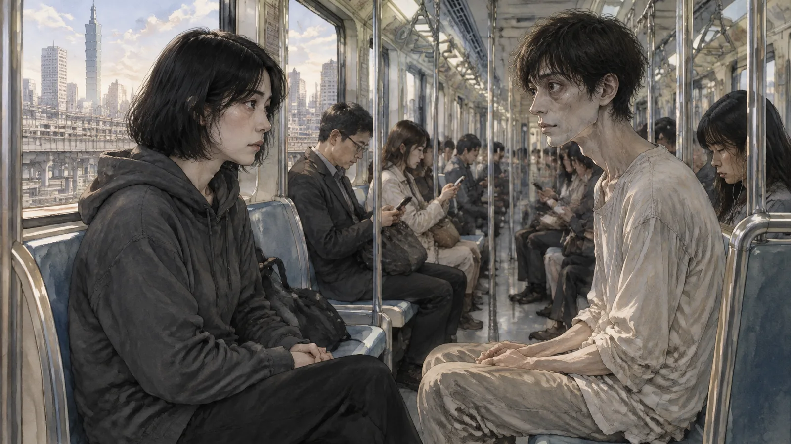
他不說話。他只是看著她。
她打電話給游醫師。
第十一章游醫師
游醫師的診所在信義區，一棟很新的大樓的十二樓，全部是白色的。
柯瑾坐在他的辦公室裡，說了王志明的事。她說得很簡單，沒有講規矩，沒有講三次，只說她吃了一個夢，可是那個夢沒有進來，它在外面。
游醫師聽完，沒有笑。
「妳母親也說過類似的話。」他說。
柯瑾的手抓緊了椅子的扶手。
「你認識我母親？」
「八年前，她是我的病人。」游醫師說，「她來找我，說她睡不著。她說她的腦子裡有太多別人的東西。她說得很含糊，我以為是解離症狀。我幫她做了腦波。」
他打開平板，轉過來給柯瑾看。
「這是正常人的快速動眼期。」一條波形，「這是妳母親的。」另一條波形，密密麻麻的，像二十幾條線疊在一起。
「我從來沒有看過這種東西。」游醫師說，「我請她回來做進一步的檢查。她沒有回來。一個星期後，她失蹤了。」
柯瑾看著那條波形。二十幾條線。二十幾個夢。母親說她吃太多了，每一個都還在。
「你為什麼找我？」
「因為我一直在想她。」游醫師說，「八年。我一直在想，那個波形是什麼。然後林老師的紀錄出現了——一個十五年的夢魘，一夜之間消失。我調了她的腦波，發現她的波形跟妳母親的剛好相反。妳母親的是二十幾條疊在一起，林老師的是一條，很乾淨，像有人把多餘的拿掉了。」
「所以你知道我會吃夢。」
「我知道有一件事，是我不能解釋的。」游醫師說，「我不需要解釋它。我只想知道——」他停了一下，「我只想知道那個人怎麼了。妳母親。她那天坐在這裡，說她很怕，怕她會吃到她女兒的夢。我沒有幫她。我讓她走了。」
柯瑾看著他。這個穿著乾淨外套的、笑起來很專業的人，忽然看起來很累。
「你有噩夢嗎？」她問。
游醫師沒有回答。可是柯瑾聞到了。燒焦的頭髮。很淡，可是有。
「我不會吃你的。」她說，「你自己走。」
游醫師笑了。這次不是專業的笑。
「我知道。」他說，「妳母親也這樣說。」
第十二章走完
王志明的媽媽住在新莊。
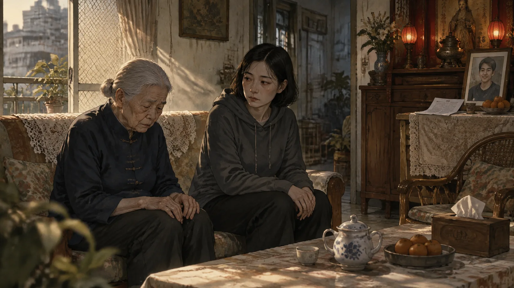
柯瑾找到她不難——二〇〇六年真兇自首以後，這個案子上了新聞，王志明的名字被平反了，他媽媽出來開過記者會。她現在七十八歲，一個人住，家裡的客廳供著兒子的照片，照片旁邊放著一份判決書。不是一九九七年的那份，是二〇〇八年的，宣告無罪的那份。
柯瑾站在門口，說她是陳法官的——她想不到一個詞。「朋友」不對，「病人」也不對。她說：「我認識陳法官。」
王媽媽看著她，看了很久，然後讓她進去。
「他來過。」王媽媽說，「跪在門口。我沒有開門。」
「我知道。」
「妳來幹嘛？」
柯瑾不知道怎麼說。她看著那張照片。照片裡的王志明二十幾歲，很瘦，眼睛很大，在笑。跟夢裡一樣，可是在笑。
「他說，」柯瑾說，「二〇〇〇年三月十一日凌晨，妳在外面。」
王媽媽的臉變了。
「他說什麼？」
「他說妳在外面。」柯瑾說，「我想知道，那天晚上妳在外面做什麼。」
王媽媽坐了很久。她的手放在膝蓋上，抖著。
「我在看守所外面。」她說，「他們不讓我進去。我站在門口，站了一整夜。凌晨四點，我聽到裡面有聲音。我不知道是不是他。我站到天亮，他們把他抬出來。」
她哭了。柯瑾坐在旁邊，沒有碰她。
「我從來沒有跟人講過這個。」王媽媽說，「連記者會都沒有講。他們問我那天晚上在哪裡，我說在家。我不想講我站在外面。我不想讓人知道我聽到了那個聲音。」
柯瑾閉上眼睛。
她看到了。不是白色的房間，不是日光燈，不是判決書。是一條街，凌晨，很冷，一個女人站在一扇鐵門外面，站著。鐵門裡面有聲音。她沒有走。她站到天亮。
這是王志明的夢。不是陳法官的。陳法官的夢是那間房間，是他自己。王志明的夢，是他媽媽站在外面。
「王媽媽，」柯瑾說，「他知道妳在外面。」
王媽媽看著她。
「他一直知道。」柯瑾說，「他說妳在外面。他說的時候，不是在怪妳。是在說，那天晚上他不是一個人。」
王媽媽哭了很久。然後她站起來，走到照片前面，把手放在照片上。
「妳是誰？」她問，「妳怎麼知道這些？」
「我是一個走路的人。」柯瑾說，「我把別人的路走完。」
她走出王媽媽的家，走到街上。天很亮。她低頭看自己的手，手上的手銬印子不見了。她在便利商店的玻璃裡看自己的臉，只有自己的臉。
胸口有一顆石頭。很重。可是它進來了。
它會走完的。
第十三章枕頭
十一月的一個晚上，柯瑾把那個枕頭帶去洗衣店。
她請了假。老闆說沒問題，反正也沒有人。她把店門鎖上，燈關掉，只留販賣機的光。她在最裡面的椅子上坐下來，把枕頭放在頭後面。
她想了很久要不要做這件事。
母親說：這是我最後一個。妳吃了，我就走完了。
阿嬤說：不吃自己人的夢。
可是母親不在了。八年。她已經不是「自己人」了——她是一封信，一個枕頭，一條二十幾條線疊在一起的波形。柯瑾不知道她在哪裡，不知道她還在不在，不知道她是不是真的在某個沒有人的地方，把二十幾個夢一個一個走完。
她只知道，有一個夢留給她。
她閉上眼睛。
✦
一個房間。
不是白色的，是暗的。有一扇窗，窗外是台北，晚上，很多燈。房間裡有一張床，床上躺著一個小女孩，八歲，睡著了。她在做夢。她的眉頭皺著，手抓著棉被。
床邊坐著一個女人。四十幾歲。是母親。
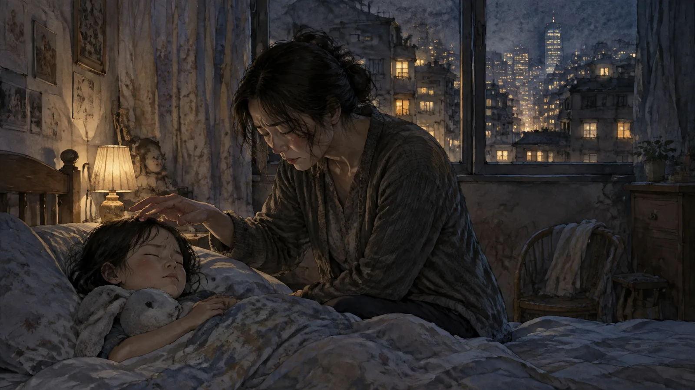
母親看著女孩。她的手放在女孩的額頭上，沒有動。她在聽。柯瑾知道她在聽什麼——她在聽女孩的夢。女孩在做噩夢，母親聽得到，聞得到，那個燒焦頭髮的味道充滿了整個房間。
母親的手在抖。
她想進去。柯瑾感覺得到，那種想，像餓了很久的人看到食物。她只要閉上眼睛，滑進去，把那個東西拿走，女孩就不會皺眉頭了。這麼簡單。
她沒有。
她把手拿開。她站起來，走到窗邊，背對著床，看著窗外的燈。她站了很久。女孩在床上翻了一個身，眉頭慢慢鬆開了。夢自己走了。小孩的夢會自己走。
母親沒有回頭。她的肩膀在抖。
然後她轉過身，看著——不是看著女孩。是看著柯瑾。看著現在的、三十歲的、坐在洗衣店裡的柯瑾。
「妳來了。」她說。
柯瑾說不出話。
「這是我最後一個。」母親說，「我做了二十年。這一個我沒有吃。我留著它，因為我想讓妳看到——我沒有吃。妳的夢我沒有吃。妳所有的夢，都是妳自己的。」
她走過來，站在柯瑾面前。她的臉很累，可是很清楚。
「小瑾，」她說，「妳可以不做。」
「阿嬤說這是份。」
「阿嬤說的對。可是份可以放下。」母親說，「我放不下，因為我學會的時候太小，我沒有看過別的活法。妳不一樣。妳可以選。」
「妳在哪裡？」
母親笑了。
「在走。」她說，「還有幾個。快了。」
她伸出手，碰了一下柯瑾的臉。跟王志明在夢裡碰她的方式一樣，可是這次是暖的。
「這個夢妳吃了，」她說，「我就走完了。然後我會做我自己的夢。二十年了，我沒有做過自己的。」
柯瑾伸出手。
她把它拿走了。
第十四章自己的夢
她醒過來的時候，天亮了。
販賣機的光還亮著。枕頭在她頭後面，還是很輕，很軟。她坐了很久，等那種重量——胸口的石頭——可是沒有。什麼都沒有。夢進來了，可是它不重。它像一杯溫水。
她走完了。不用三天。它進來的那一刻，就走完了。
因為那不是一個噩夢。那是一個母親坐在床邊，沒有做她想做的事。那是一個放下。
柯瑾站起來，把店門打開。早上七點，萬華的街道很吵，有人在賣早餐，有人在掃地。她站在門口，看著。
然後她回家，睡覺。
她睡了十二個小時。
她做了一個夢。
夢裡是一間洗衣店。清晨，天剛亮，光從玻璃門照進來，十二台洗衣機都停著，很安靜。她坐在最裡面的椅子上。門開了，有人走進來——她看不清楚是誰，可是那個人手裡拿著一袋衣服，走到一台洗衣機前面，把衣服丟進去，投了錢，按下開始。
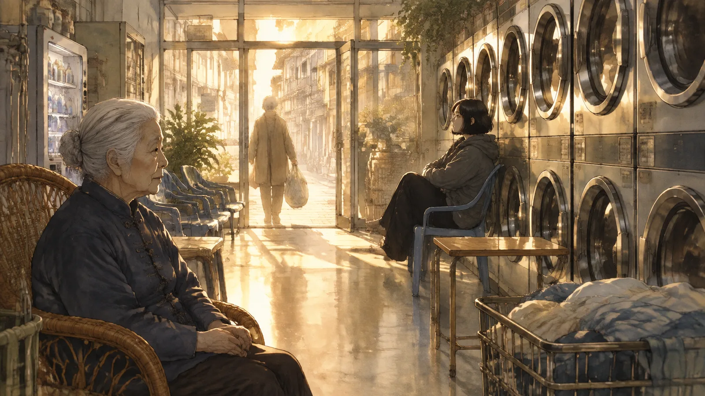
洗衣機開始轉。
那個人在靠窗的椅子上坐下來，看著她，笑了一下。
就這樣。沒有水，沒有車燈，沒有白色的房間。就是一間洗衣店，早上，有人來洗衣服。
她醒過來，躺在床上，看著天花板。她的臉是濕的。
三十年了。這是她第一個自己的夢。
第十五章推車
十二月，那個推著推車的老人回來了。
還是凌晨三點。還是一件外套丟進洗衣機，五十塊，然後坐下來。他比上次瘦了一點，推車裡的東西少了一些。他看到柯瑾，點了一下頭，像認得她。
他沒有睡著。
他坐在椅子上，看著洗衣機轉，看了很久。然後他開口說話。他的聲音很啞，像很久沒有用過。
「上次來，我睡著了。」他說，「醒來的時候，覺得很輕。」
柯瑾沒有說話。
「我做了三十年那個夢。」老人說，「一條路，下雨，後面有車。我在跑。三十年，每個晚上。我不敢睡覺，我在公園裡坐著，坐到天亮。」
「那條路是哪裡？」
「北宜公路。」老人說，「一九九三年。我開車，載我太太跟女兒。下雨。我睡著了。」
他沒有再說下去。不用說了。
「上次來，我在這裡睡著了，那條路不見了。」他說，「我不知道為什麼。我以為是我太累了。可是後來一個月，我沒有再夢到。我開始睡覺了。三十年來第一次，我可以躺下來睡覺。」
他看著柯瑾。
「是妳嗎？」
柯瑾想了很久。她想起阿嬤的第四條。她想起母親說「妳可以不做」。她想起這個老人三十年沒有躺下來睡覺。
「是。」她說。
老人點點頭。他沒有問怎麼做的，沒有問為什麼。他只是從推車裡拿出一個東西，放在她旁邊的椅子上。
是一張照片。很舊，邊角都捲了。照片裡是一個年輕的男人，一個女人，一個小女孩，站在一台車前面，在笑。
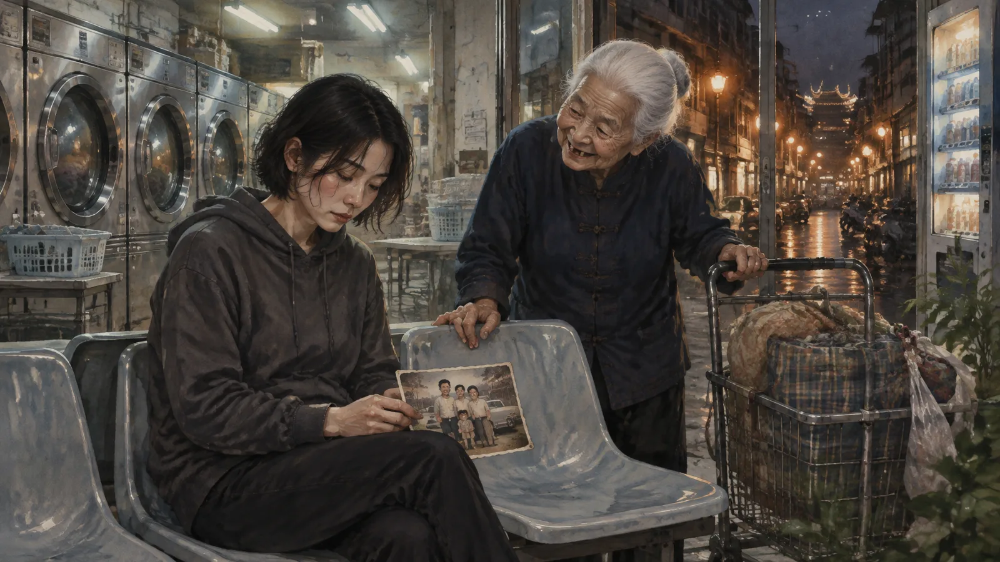
「這個給妳。」他說，「我帶了三十年。我不需要了。我現在閉上眼睛就看得到她們，不用看照片。」
「這是你的東西。」
「妳走過那條路。」老人說，「妳也認識她們了。」
他把外套從烘衣機裡拿出來，穿上。走到門口的時候，他回頭。
「小姐，」他說，「妳自己有夢嗎？」
柯瑾看著他。
「有。」她說，「最近才有。」
「好的還是壞的？」
「好的。」
老人笑了。他的牙齒缺了幾顆，笑起來像一個小孩。
「那就好。」他說。
他推著推車走了。柯瑾拿起那張照片，看了很久，然後把它放進口袋裡，跟游醫師的名片放在一起。
洗衣機停了。店裡很安靜。她坐回自己的椅子，靠著牆，閉上眼睛。
沒有夢。只是睡著了。就這樣。
尾聲
柯瑾還是在洗衣店上夜班。
她還是會吃夢。不多。一個月一兩個，都是那種很重的、壓著人的、走不掉的。她會坐過去，閉上眼睛，把它拿走，然後走完。她不收錢。有人給她一袋水果，她收；有人給她一個信封，她退回去。
可是她也開始不吃了。
有人來，睡著了，皺眉頭，她會看。看那個夢是什麼。如果是可以自己走的——像小孩的夢，像小恩的夢，像大部分人的大部分夢——她就不動。她坐在自己的椅子上，聽洗衣機轉，讓那個人自己走。
大部分人走得完。阿嬤沒有教她這個。可是她現在知道了。
林老師每個星期四還是來。她不做噩夢了，可是她還是來，帶一袋衣服，坐在靠窗的位子，跟柯瑾講學校的事。
陳法官沒有再來。林老師說他每個月還是會夢到那間房間，可是次數少了，一個月一次。他說他不想再拿走了。他說那是他的。
小恩來過一次。十七歲了，還是穿制服。她說她還是會做那個夢，四十歲的房間。可是她說她在夢裡開始做別的事——她在那間房子裡種了一盆植物，她開始寫一本書。她說：「我想看看她會不會寫完。」
游醫師寄了一封信來，說他關掉了那個研究。他說有些東西不需要解釋。信的最後他寫：「我的夢，我自己走了三個月。走完了。謝謝妳沒有吃。」
母親沒有消息。
可是有一天晚上，凌晨三點，洗衣店裡沒有人，柯瑾坐在椅子上，忽然聞到一種味道。不是燒焦的頭髮。是別的。像早上的空氣，像剛洗好的衣服，像一個人睡得很好的房間。
她閉上眼睛。
她什麼都沒有看到。可是她知道，在某一個很遠的地方，有一個人做完了最後一個夢，然後睡著了，然後做了一個自己的。
洗衣機轉著。
（完）
留言板
看不懂、想補充、發現錯誤都歡迎留言；填個暱稱就能發。